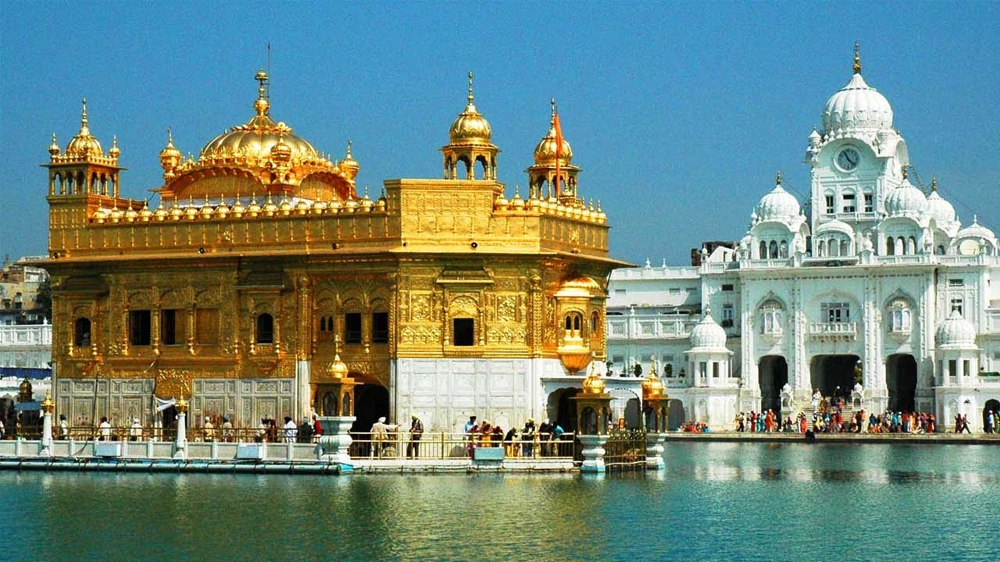
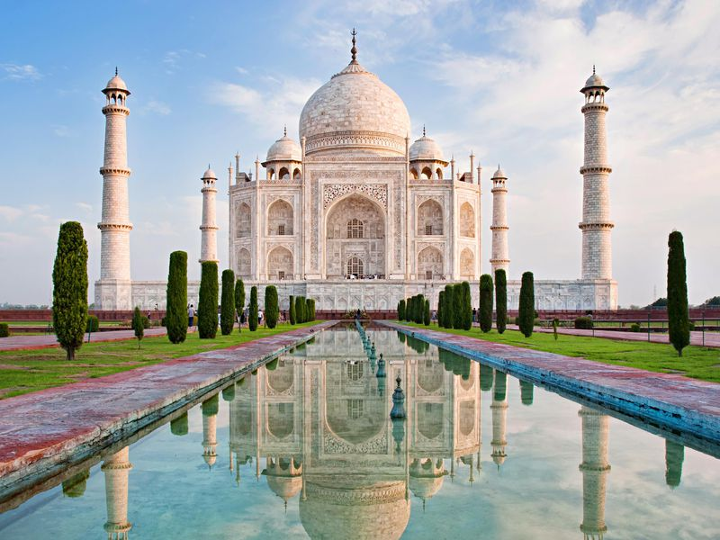
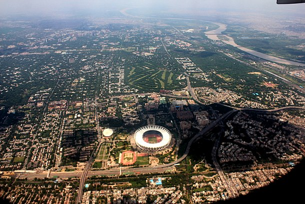

India, also known as the Republic of India,is a country in South Asia. It is the seventh largest country by area and with more than 1.3 billion people, it is the second most populous country as well as the most populous democracy in the world. Bounded by the Indian Ocean on the south, the Arabian Sea on the southwest, and the Bay of Bengal on the southeast, it shares land borders with Pakistan to the west; China, Nepal, and Bhutan to the northeast; and Bangladesh and Myanmar to the east. In the Indian Ocean, India is in the vicinity of Sri Lanka and the Maldives, while its Andaman and Nicobar Islands share a maritime border with Thailand and Indonesia.
The National Flag of India is a horizontal rectangular tricolour of India saffron, white and India green; with the Ashoka Chakra, a 24-spoke wheel, in navy blue at its centre. It was adopted in its present form during a meeting of the Constituent Assembly held on 22 July 1947, and it became the official flag of the Dominion of India on 15 August 1947. The flag was subsequently retained as that of the Republic of India. In India, the term "tricolour" almost always refers to the Indian national flag. The flag is based on the Swaraj flag, a flag of the Indian National Congress designed by Pingali Venkayya.By law, the flag is to be made of khadi, a special type of hand-spun cloth or silk.
Punjab is a geopolitical, cultural and historical region in South Asia, specifically in the northern part of the Indian subcontinent, comprising areas of eastern Pakistan and northern India. The boundaries of the region are ill-defined and focus on historical accounts. Until the Partition of Punjab in 1947, the British Punjab Province encompassed the present-day Indian states and union territories of Punjab, Haryana, Himachal Pradesh, Chandigarh, and Delhi; and the Pakistani provinces of Punjab and Islamabad Capital Territory. It bordered the Balochistan and Pashtunistan regions to the west, Kashmir to the north, the Hindi Belt to the east, and Rajasthan and Sindh to the south.
Agra is a city on the banks of the river Yamuna in the northern state of Uttar Pradesh, India.It is 378 kilometres (235 mi) west of the state capital, Lucknow, 206 kilometres (128 mi) south of the national capital New Delhi, 58 kilometres (31 mi) south of Mathura and 125 kilometres (78 mi) north of Gwalior. Agra is one of the most populous cities in Uttar Pradesh, and the 24th most populous in India.Agra is a major tourist destination because of its many Mughal-era buildings, most notably the Tāj Mahal, Agra Fort and Fatehpūr Sikrī, all of which are UNESCO World Heritage Sites.Agra is included on the Golden Triangle tourist circuit, along with Delhi and Jaipur; and the Uttar Pradesh Heritage Arc, tourist circuit of UP state, along Lucknow and Varanasi. Agra falls within the Braj cultural region.
New Delhi is an urban district of Delhi which serves as the capital of India and seat of all three branches of the Government of India. The foundation stone of the city was laid by Emperor George V during the Delhi Durbar of 1911. It was designed by British architects, Sir Edwin Lutyens and Sir Herbert Baker. The new capital was inaugurated on 13 February 1931,[7] by Viceroy and Governor-General of India Lord Irwin. Although colloquially Delhi and New Delhi are used interchangeably to refer to the National Capital Territory of Delhi (NCT), these are two distinct entities, with New Delhi forming a small part of Delhi. The National Capital Region is a much larger entity comprising the entire NCT along with adjoining districts in neighboring states.
 Click here to view exciting things to do in Delhi!Mumbai is the capital city of the Indian state of Maharashtra. As of 2011 it is the most populous city in India with an estimated city proper population of 12.4 million. The larger Mumbai Metropolitan Region is the second most populous metropolitan area in India, with a population of 21.3 million as of 2016. Mumbai lies on the Konkan coast on the west coast of India and has a deep natural harbour. In 2008, Mumbai was named an alpha world city.It is also the wealthiest city in India, and has the highest number of millionaires and billionaires among all cities in India.Mumbai is home to three UNESCO World Heritage Sites: the Elephanta Caves, Chhatrapati Shivaji Maharaj Terminus, and the city's distinctive ensemble of Victorian and Art Deco buildings.
 Click here to view exciting things to do in Mumbai!
Click here to view exciting things to do in Mumbai!